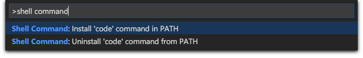

Installation
- Download Visual Studio Code for Mac.
- Double-click on the downloaded archive to expand the contents.
- Drag
Visual Studio Code.appto theApplicationsfolder, making it available in theLaunchpad. - Add VS Code to your Dock by right-clicking on the icon and choosing
Options,Keep in Dock.
Command Line
You can also run VS Code from the terminal by simply typing code.
To set it up, launch VS Code. Then open the Command Palette (⇧⌘P (Windows, Linux Ctrl+Shift+P)) and type shell command to find the Shell Command: Install ‘code’ command in PATH command.

Finally, restart the terminal for the new $PATH value to take effect. You’ll be able to simply type code . in any folder to start editing files in that folder.
Note: If you still have the old
codealias in your.bash_profile(or equivalent) from an early VS Code version, remove it and replace it by executing the Shell Command: Install ‘code’ command in PATH command.
Updates
VS Code ships monthly releases and supports auto-update when a new release is available. If you’re prompted by VS Code, accept the newest update and it will get installed (you won’t need to do anything else to get the latest bits). If you’d rather control VS Code updates manually, see How do I opt out of auto-updates.
Preferences Menu
You can configure VS Code through settings, color themes and custom keybindings and you will often see mention in our documentation of the File > Preferences menu group. On a Mac, the Preferences menu group is under Code, not File.
Next Steps
Once you have installed VS Code, these topics will help you learn more about VS Code:
- Additional Components - Learn how to install Git, Node.js, TypeScript and tools like Yeoman.
- User Interface - A quick orientation around VS Code.
- User/Workspace Settings - Learn how to configure VS Code to your preferences settings.
Common Questions
macOS Sierra support
Some Sierra users are seeing bad background artifacts in the VS Code editor. The underlying issue is related to Chrome and can happen when you are using a custom color profile.
There is a workaround, you can run VS Code with forced GPU rasterization to mitigate this issue:
|
Mono and El Capitan
Mono stopped working in Visual Studio Code after I installed OS X 10.11 El Capitan Public Beta. What do I do?
Run these commands:
|